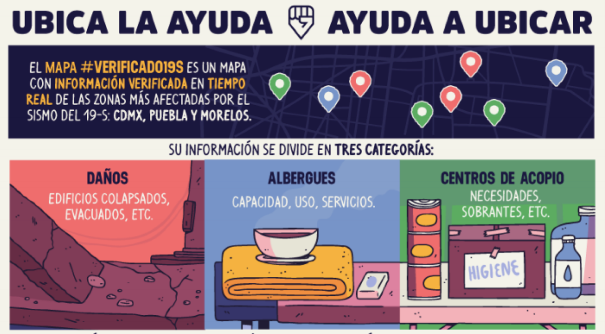
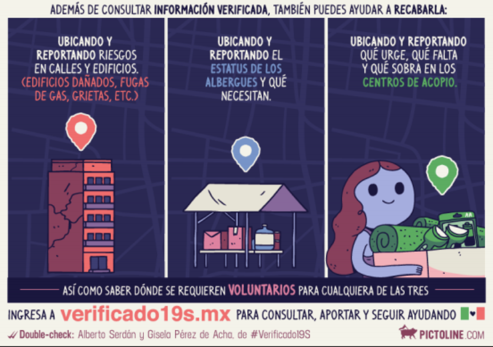

¿CÓMO PUEDES AYUDAR?
Compártenos información de daños, centros de acopio o albergues


#Verificado19S es una plataforma digital que verifica y organiza información para hacer más eficiente la respuesta ciudadana tras el sismo del 19 de septiembre pasado
BASE DE DATOS DEL C-5
INFORMACIÓN DE MANOS A LA OBRA EN COLABORACIÓN CON HARVARD Y MIT
INFORMACIÓN DE LA ESTRATEGIA DIGITAL NACIONAL
Compártenos información de daños, centros de acopio o albergues
A partir de la información que recibimos e integramos en nuestras bases de datos, generamos un mapa y coordinamos un equipo que corrobora la información sobre el terreno.
Si quieres donar cosas, pero no sabes a dónde ir consulta las siguientes cuentas de Twitter:
Nuestro equipo de #Verificado19S comparte información en tiempo real sobre las necesidades más urgentes de la Ciudad de México y los Estados. Esta información está verificada.
Recuerda que la situación de cada lugar cambia muy rápido --> fíjate bien en la hora e infórmate de nuevo antes de salir a ayudar.
Esta plataforma es posible gracias a la colaboración de voluntarios ciudadanos y organizaciones como Artículo 19, Ayuda Óptima, Bicitekas, CartoCrítica, Cítrico Gráfico, Codeando México, Cultura Colectiva, Tú Constituyente, Data Cívica, Datank.ai, The Data Pub, Democracia Deliberada, Devf, Estrategia Digital Nacional, Horizontal, La Lonja MX, OPI, Oxfam, Revista Paradigmas, Social TIC; con el apoyo de Google, McKinsey y Vice.
Ante la emergencia humanitaria provocada por el terremoto del 19 de septiembre, un grupo
de activistas, periodistas y programadores decidieron reunirse en el Centro Cultural Horizontal
para buscar formas de verificar la información que aparecía en medios de comunicación y
redes sociales. Con la colaboración inicial de programadores desarrollamos un mapa y una
base de datos colaborativa y que actualmente es la plataforma más certera, más actualizada y
más visitada de datos sobre el terremoto.
Además de la Ciudad de México, ya se incluye información de todos los estados afectados por
el terremoto del 19 de septiembre.